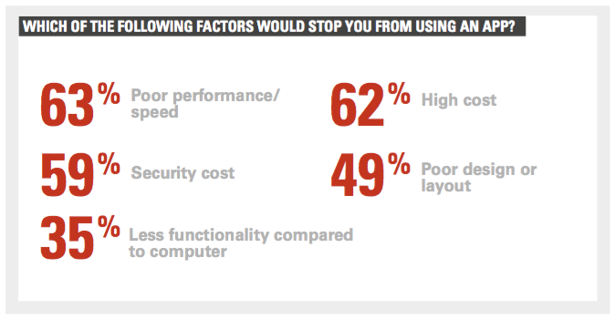
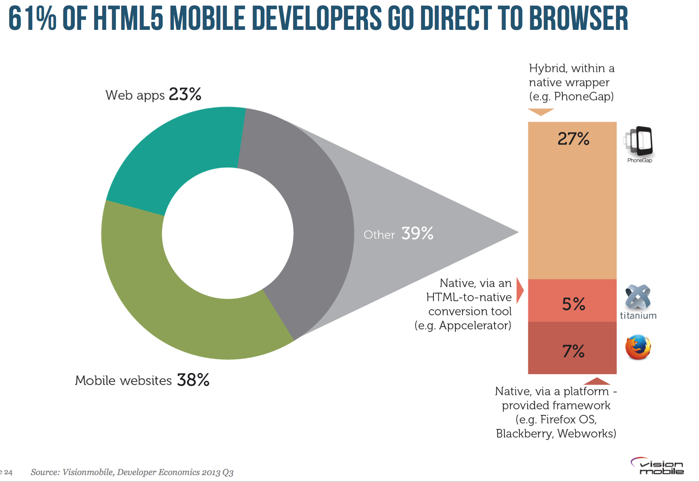
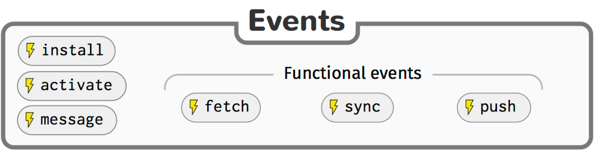
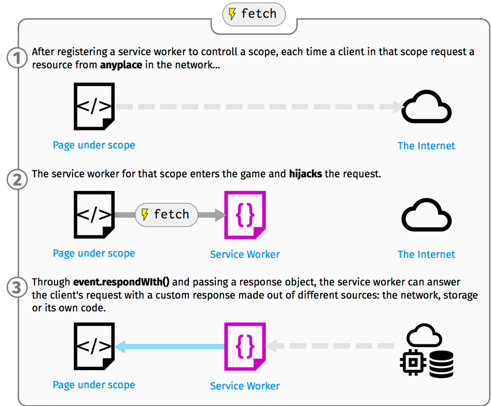
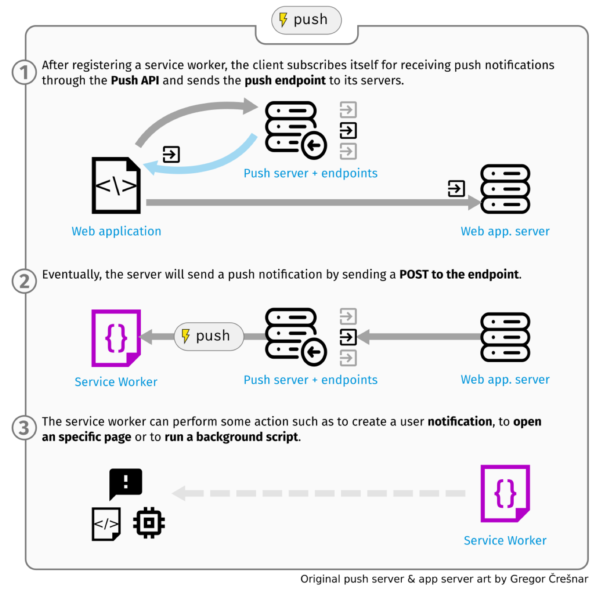
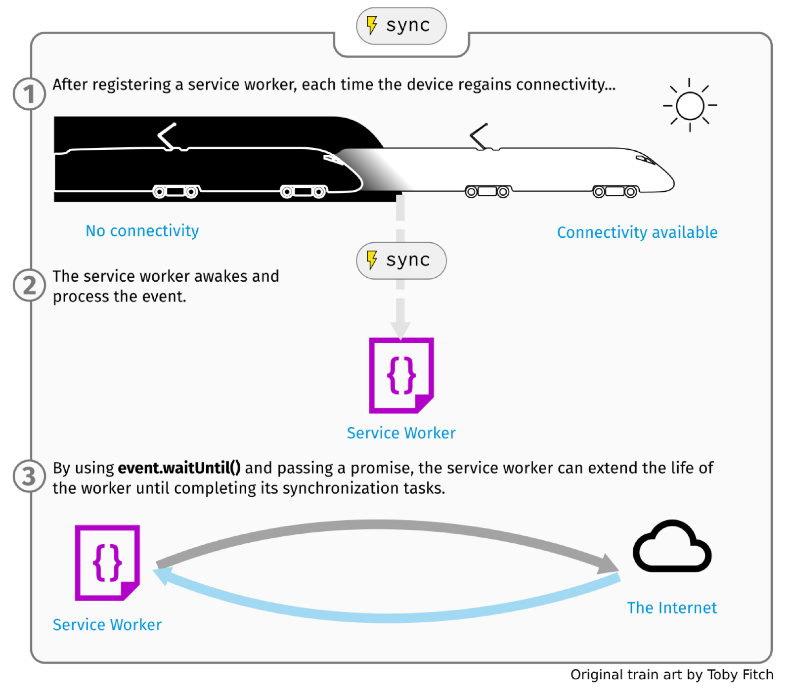

The Right Choice
When is the Web the right answer —and why?
Index
- The Web as a platform
- So, what's stopping the Web?
- Progressive Web Applications
- Successful examples
- Resources and credits
Web vs Native

C'mon! Both are superheroes!
Nope, this is not the way…
The Web as a platform
The Web is not…
- An operating system
- A hardware specification
The Web is…
- An unprecedented effort of consensus
- A virtual machine for HTML5
- A free model of content distribution
Interoperability

Source: 2015 U.S. Mobile App Report
Confluence of factors is driving the huge uptick in app usage time, and apps are overtaking other media in importance. However, it’s also important to recognize the others haven’t gone away and the opportunity lies in multi-platform engagement.
Lack of friction

So, what's stopping the Web?
User experience
Dependency on connectivity
Dependency on network speed

Inability to re-engage the user

Performance
Source: Milennials and mobility, Oracle
Progressive Web Apps
HTML5 is popular:
Source: Developers Economics 2013 Q3, Vision Mobile
But only inside an application wrapper...
so you are forced to use the marketplace again!
Let's bring the benefits of apps to the Web!
Service Workers
Service Workers are…
- JavaScript programs
- Run in a separate thread
- Independent from the browser being open
- Driven by events
Functional Events
Those able to wake up the Service Worker
Fetch
Push
Sync
Web Manifest
{
"name": "Flipkart Lite",
"short_name": "Flipkart Lite",
"icons": [
{
"src": "https://img1a.flixcart.com/www/linchpin/batman-returns/logo_lite-cbb3574d.png",
"sizes": "192x192",
"type": "image/png"
}
],
"start_url": "/?start_url=homescreenicon",
"orientation": "portrait",
"display": "standalone",
"theme_color": "#006cb4",
"background_color": "#006cb4"
}Partial manifest from Flipkart Lite.


Performance
- RAIL performance model
- FLIP your animation in aerotwist.com
- Performance tools in Firefox Dev. edition
Still worried about performance?
There's more coming…
- WebGL is ready for production
- WebAssembly first demo
- WebRender: superfast render engine by Mozilla
The Right Choice
My recommendation:
- Start with the Web
- If you have business arguments, stay away
- If you need access to non-available APIs, stay away
Now the Web is ready, more than ever!
Successful examples
e-Commerce
- Flipkart triples time-on-site with Progressive Web App
- AliExpress increases conversion rate for new users by 104%
- United eXtra Electronics grows eCommerce sales by 100% with Web Push Notifications
- Push Notifications help Jumia reverse cart abandonment
- Konga cuts data usage 92%
- 5miles increases conversions 60%
Source: Google showcase
Heroes of Paragon

WebGL matures into a commercial-ready technology
The Web holds 2nd position in DARPU.
Resources and credits
- Alex Russell on Progressive Web Apps
- Flipkart Lite progressive web app
- Google showcase
- Paul Lewis aerotwist.com blog on performance
- Sevice Worker 101
Salvador de la Puente González
The Return of the Dark Knight Web!